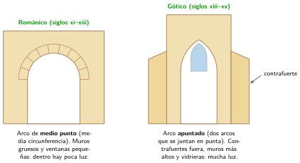
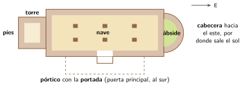
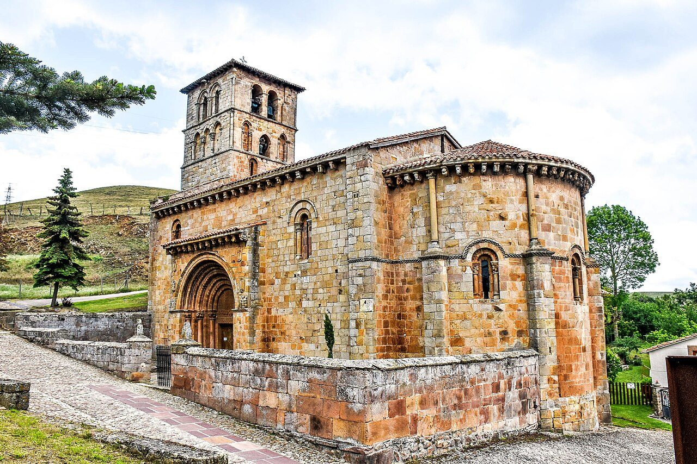
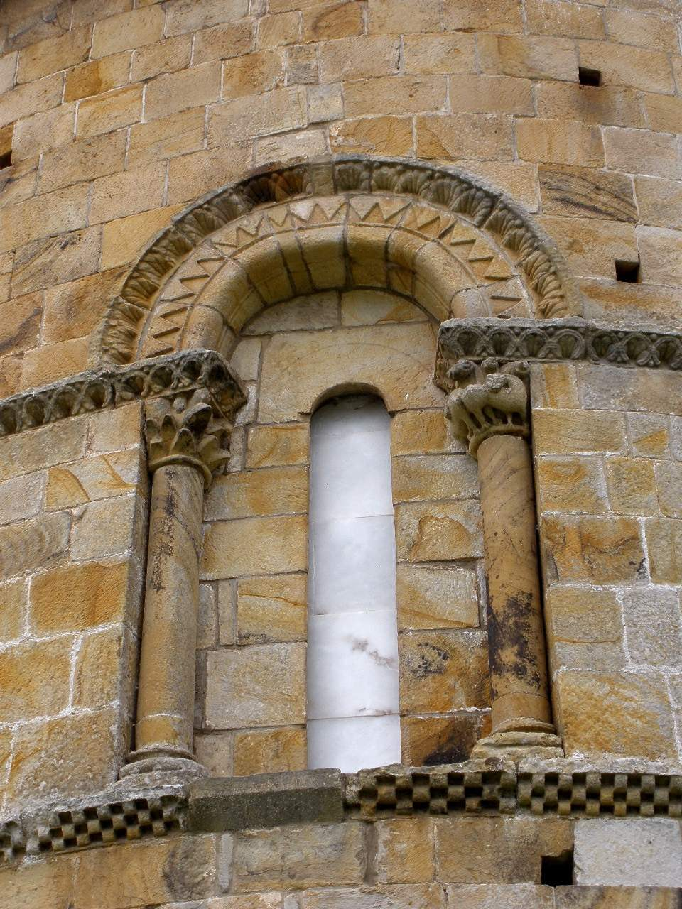

El románico cántabro
Criterios: PC 5.1, PC 5.2
🤔 Pienso5 min
Qué hago aquí: Piensa un momento y contesta con lo que ya sabes. No pasa nada si no lo sabes: es para empezar.
Mira las fotos de esta ficha. ¿Qué formas se repiten en todas las iglesias?
📖 Leo y aprendo15 min
Qué hago aquí: Lee despacio, mira los dibujos y los ejemplos, y quédate con la idea clave del final.
El románico es el estilo de los siglos xi, xii y parte del xiii. Se extendió por toda Europa con los monasterios y los peregrinos del Camino de Santiago. Cantabria tiene más de cien iglesias románicas, sobre todo en Campoo, Valderredible y la costa.



Foto: MottaW · CC BY-SA 4.0 · M-colegiata-cervatos-mayo-2023-c.jpg

Foto: Zarateman · CC0 · Castañeda - Colegiata de Santa Cruz 11.jpg
✏️ Hago25 min
Qué hago aquí: Haz las actividades en orden. Empieza siempre por las básicas.
Explica por qué las iglesias románicas tienen muros gruesos y ventanas estrechas. Relaciona el peso de la bóveda con la forma del edificio.
Explica dónde se colocaba la escultura románica (portada, capiteles, canecillos) y para qué servía en una época en que casi nadie sabía leer.
El ábside mira al este. Explica el motivo simbólico y cómo puedes usar ese dato para orientarte en un pueblo.
Explica por qué el románico se extendió por toda Europa con rasgos parecidos. Usa las palabras monasterios, peregrinos y Camino de Santiago.
Hoy vemos las iglesias románicas de piedra desnuda, pero estaban pintadas. Explica cómo cambia eso nuestra idea del románico y por qué se perdieron las pinturas.
Elige una iglesia románica de Cantabria y haz su ficha de análisis: situación, planta, arcos, cubierta, escultura y estado de conservación.
✏️ Puedes responder escribiendo, con un dibujo o un esquema, o contándolo en voz alta.
Muchos canecillos tienen figuras extrañas, monstruos o escenas atrevidas. Propón dos interpretaciones de por qué aparecían en una iglesia.
🚀 Amplío (si quieres saber más)
Qué hago aquí: ¿Has terminado? Lee la curiosidad o elige el reto. Es voluntario.
Visita (o busca en internet) una iglesia románica cercana y fotografía tres canecillos o capiteles. Describe cada figura, propón qué podría significar y compara tu interpretación con la que dé una fuente especializada. ¿Coinciden?
✅ Compruebo5 min
Qué hago aquí: Contesta sin mirar la ficha y marca cómo lo llevas.